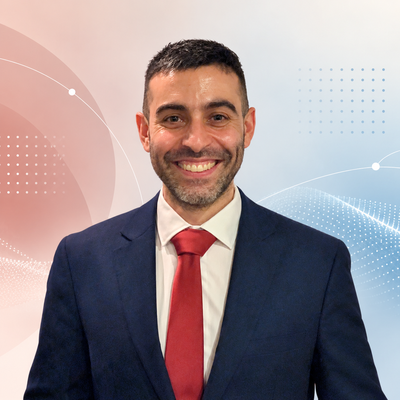

I build data science and AI systems that turn complex, large-scale data into decisions people can actually use.
Over five and a half years at DNA Electronics, I progressed from Data Analyst to Senior Data Scientist. I initiated a Python-based analytics platform as my own prototype and developed it into production software used daily across UK and US teams. It replaced substantial manual effort with reproducible, Jenkins-orchestrated workflows and gave stakeholders a configurable way to explore different analytical scenarios without needing bespoke code for every question.
The platform also became a common analytical framework for the organisation. I developed and introduced statistical methods for interpreting very large datasets, including shifting practice away from significance-led conclusions where sample size could make trivial effects look important, toward magnitude-led interpretation using effect sizes. I also developed methods for modelling the relationship between signal quality and downstream accuracy, helping identify diminishing returns and support experimental decision-making.
As the platform matured, I remained responsible for maintaining it, integrating new requirements and improving its performance and usability. I communicated every major release across the company, produced explanatory documentation and slide decks, and ran regular sessions with technical and non-technical stakeholders so that people understood not only how to use the platform, but how to interpret its data and outputs correctly.
Most recently, I extended this work into applied AI. I created an Interpretation Framework that translated domain-expert reasoning, statistical evidence and causality constraints into explicit rules, then used it to design and operationalise an LLM-driven Microsoft Copilot agent for automated interpretation. I evaluated prompt and instruction iterations against known analytical cases, testing correctness, consistency, rule adherence and unsupported conclusions, and refined the agent’s knowledge, guardrails and workflow in response to observed failure modes. After release, the capability reduced expert interpretation time from around two hours to under ten minutes.
Earlier in my time at DNAe, while still a Data Analyst, I led a deep-learning R&D project for time-series (signal) classification. I designed and trained a 1D fully convolutional network on a class-balanced 2.44M-signal dataset drawn from ~13.8M signals (11:1 imbalance). On entirely held-out experimental datasets, it reached ~92% accuracy on six of seven targets, exceeding the production pipeline on one.
Alongside the technical work, I ran internal training on software engineering, concurrency and statistics, reviewed code and analytical work, onboarded new team members and designed the technical assessment used to screen data science candidates.
Outside my technical career, I founded Sevasteia – Pontic Greek Society of London and led it from initial concept to registered charity, where I serve as one of three founding trustees.
Independent Projects
- Data Analytics Pipeline Independently developed an end-to-end Python analytics and AI pipeline for comparing experimental conditions across repeated runs. Built with Polars, statistical modelling, effect-size estimation, bootstrap confidence intervals, correlation analysis, and multivariable regression. Integrated GroqCloud LLM (openai/gpt-oss-120b) via LangChain and Pydantic to generate evidence-grounded interpretations of four research questions, with numerical citation validation and scientific-review safeguards. Automated testing and HTML report deployment through GitHub Actions, with CI across Windows, Linux, and three Python versions.
Education
-
National Technical University of Athens M.Eng. Mechanical Engineering (5-year) 2010–2015 7.88/10, equivalent to UK 2:1. Ranked 28th of 194.
-
School of Pedagogical and Technological Education B.Sc. Mechanical Engineering Educator (4-year) 2006–2010 8.05/10, equivalent to UK 2:1. Ranked 1st of 42.
Volunteering
-
Sevasteia — Pontic Greek Society of London
• Founded London’s first Pontic Greek society and led it from concept to registration as a Charitable Incorporated Organisation (Charity No. 1216903), establishing its governance framework and founding board; serve as one of three founding trustees.• Lead the society’s digital presence and public programme: designed and maintain its website, and run educational campaigns and a public-history series with original illustration.